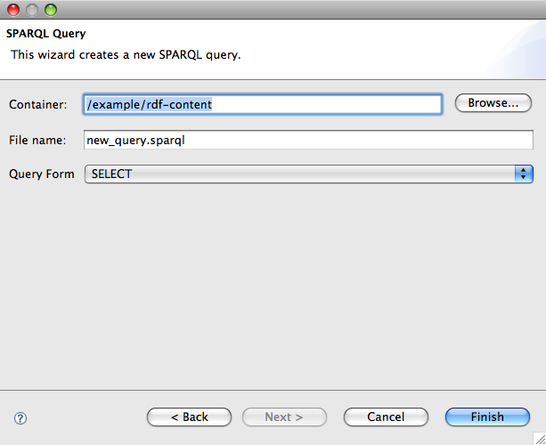

JenaTool is a simple set of Eclipse tools that help developers work with Semantic Web technologies including RDF and SPARQL specifically using the Jena Semantic Web Framework. While some aspects of the tool are purely RDF/SPARQL, the implementation is entirely based on the Jena Framework. This only really surfaces in two areas, the manner in which the user connects to an RDF store is Jena specific and then setting the context for running a query.
The tool provides the following high-level features:
The following is a screenshot of Eclipse running with the Jena perspective open showing the standard Eclipse Navigator (top left), the Jena Explorer (bottom left), the SPARQL Results view along the bottom and the editor open with a SPARQL query.
For developers new to the technologies of the Semantic Web, or Linked Data it can be difficult to get used to a new data model in RDF and a new query language in SPARQL. JenaTool is a simple but useful set of tools to allow the user to experiment with these, develop queries, understand the performance of certain query forms and manage sets of queries and test data in the same way they manage SQL queries, Java classes and test data in Eclipse - by making them workspace resources. Supporting custom content types for RDF content and SPARQL queries allows these to be added to existing projects and also be added to version control with the rest of the project resources.
Having installed JenaTool into your Eclipse install, the first step is either to add some RDF or SPARQL resources to an existing project or create a new Jena project to contain your resources. The decision over these two options really depends on your project organization and needs, and in many cases an application will include both, some resources as part of application plugin projects and potentially separate projects containing nothing but RDF and SPARQL resources. Let's assume for now we'll create a new Jena Project which will contain all the
Step 1.
Select theFile->New->Project...menu and review theNew Projectwizard. Open theJenacategory and select theNew Jena Projectoption. All you have to do is choose a name for your project as usual in Eclipse and hit theFinishbutton.
Basically this is an empty project with some pre-defined folders for connection information, RDF content resources, RDF vocabularies (RDF Schema, OWL) and finally SPARQL Queries. However, these categories are useful at organizing resources and using the wizard ensures consistency of projects as opposed to using arbitrary project and folder structures. Now, let's first create a sample RDF resource; you can use this as a template to create a number of others as additional test data later.
Step 2.
Select theFile->New->Other...menu and review theNewwizard. Open theJenacategory and select theNew RDF/XML Fileoption. Select thecontentfolder in your new project for the container, enter a new name for the file if you wish and you can leave the subject URI blank and hit theFinishbutton.
The generated RDF/XML is correct, and will be opened using the standard Eclipse XML editor. But, while it's correct it's not terribly interesting, so replace the content in your editor with some more information at least, we'll use the example below in our examples.
<rdf:RDF xmlns:rdf="http://www.w3.org/1999/02/22-rdf-syntax-ns#"
xmlns:foaf="http://xmlns.com/foaf/0.1/">
<foaf:Person rdf:about="https://jazz.net/people/simonj">
<foaf:name>Simon Johnston</foaf:name>
<foaf:firstName>Simon</foaf:firstName>
<foaf:surname>Johnston</foaf:surname>
<foaf:currentProject rdf:resource="http://jazz.net/projects/foundation"/>
<foaf:knows rdf:resource="http://example.org/People/david"/>
<foaf:knows rdf:resource="http://example.org/People/james"/>
</foaf:Person>
</rdf:RDF>
Now we need somewhere to store this RDF, and Jena has a number of persistent stores but currently only the TDB store is supported by JenaTool. So, we'll create a new Jena TDB store (Dataset) and then we'll add the RDF above to the store.
Step 3.
Ensure the Jena Explorer view is open (either select the Jena Perspective, or open the view from theWindow->Show View->Other...menu. Now, select theAdd New Connectionbutton from the view toolbar (or from the context menu by right-clicking on theJena Connectionsfolder in the view). Select a location for the new store, this has to be a directory not a file, then hit theFinishbutton. If the location does not exist you'll be prompted to create a new dataset at this location, accept this choice.
The connection will be created and added to the explorer view, so now we can add content to this connection and run queries against the connection.
Step 4.
Right click on the RDF resource we created in step 2 above, from the context menu select theJenamenu and then theQuick Importaction. The resulting dialog allows you to select the resource to import (which will be correctly filled in), the target connection to add the resource to (which will be the one we just created) and the format of the file (which should correctly be set to beRDF/XML. The final two text fields can be left blank for now, just hit theFinishbutton.
The RDF triples contained in the resource we created will now be added to the default graph in the store we just created. But, to be sure of this we need to be able to get them back out of the store and to do that we need to run a query. The query itself is pretty simply, but we need to create a SPARQL query resource and then execute it against the same store.
Step 5.
Select theFile->New->Other...menu and review theNewwizard. Open theJenacategory and select theNew SPARQL Queryoption. Select thequeryfolder in your new project for the container, enter a new name for the file if you wish and set the query form to beSELECT. Now hit theFinishbutton.

The wizard not only creates a new SPARQL query resource in the project but it also adds in a template example as a starting point, this is useful as a reminder of the general structure of a query lest we forget, but for now we can remove the content generated by the wizard and replace it with the simple "select everything" query shown in the example below. Now we're ready to run our query.
SELECT * WHERE { ?s ?p ?o }
Step 6.
Right click on the SPARQL resource we created in step 5 above, from the context menu select theJenamenu and then theRun Queryaction. The resulting dialog allows you to select the resource to run (which will be correctly filled in) and the target connection to run the query against (which will be the one we just created) The other options on the dialog can be ignore for now, just hit theFinishbutton.
The query will run, and the results of the query will show in the SPARQL Results View, as shown in the image below. As you can see the output is textual, the view does not use a table viewer as certain query forms such as DESCRIBE and CONSTRUCT do not return tabular data. Also, new results are appended to the view, the user has to manually clear the view using the toolbar button.